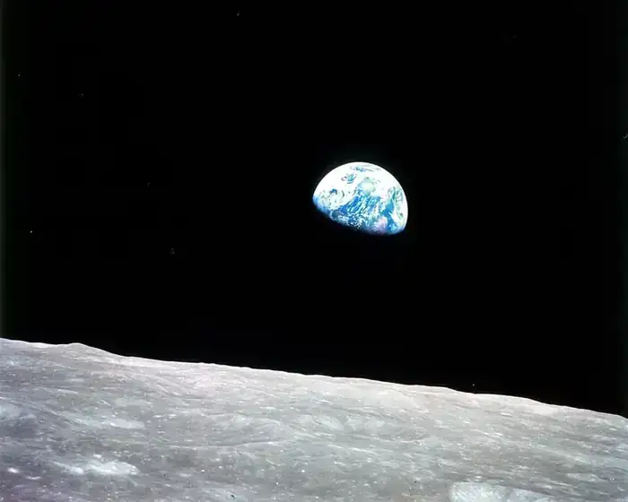
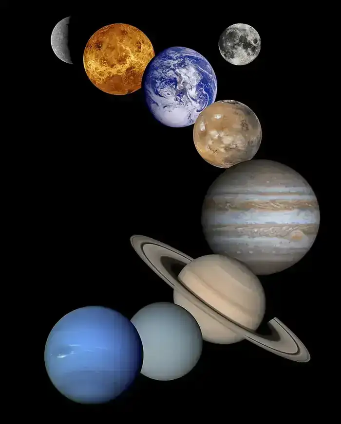

The proposal
Roger Penrose's conformal cyclic cosmology (2005) proposes that the universe is a sequence of 'aeons'. At the end of an aeon, all matter has decayed and only massless radiation remains; because massless particles do not experience time or scale, the infinite future of one aeon is conformally identical to the singularity of the next. The geometry connects, and a new aeon begins.
Maps, diagrams and images





The test
The theory makes a striking prediction: gravitational radiation from the previous aeon should leave concentric circles in the cosmic microwave background, of a specific temperature signature. Searches were reported in 2010 and again in 2013 as detections; independent reanalyses found that the circles were consistent with chance in the noise, and the claimed significance did not survive.
Penrose and colleagues have defended the analysis. The theory is mathematically serious and observationally unsupported.
Documented: the theory and its specific prediction.
Reported: circle detections in the CMB, in 2010 and 2013.
Not replicated: independent analyses find chance-level circles.
Not excluded: the theory, which survives on other fronts.
The honest label: live debate, with the only test to date coming back negative.
Why it is in the archive
Because it is a case where a theorist made a falsifiable prediction and it failed — which is worth showing, since the collection is full of claims that avoid that risk.
More images
Open resources on this topic
- PapersOpen-access articles: DOAJ · PubMed Central · Internet Archive Scholar
- BooksPublic-domain and borrowable copies: Open Library · Project Gutenberg · Google Books · Internet Archive
Cite this page
Momin, S. (2026). Conformal Cyclic Cosmology. The Larger World Archive. https://drsamonline.github.io/LARGE_GLOBE/conformal-cyclic-cosmology.htmlMomin, Sohil. “Conformal Cyclic Cosmology.” The Larger World Archive, 2026, https://drsamonline.github.io/LARGE_GLOBE/conformal-cyclic-cosmology.html.Momin, Sohil. “Conformal Cyclic Cosmology.” The Larger World Archive, 2026. https://drsamonline.github.io/LARGE_GLOBE/conformal-cyclic-cosmology.html.@misc{conformal2026conformal,
author = {Momin, Sohil},
title = {Conformal Cyclic Cosmology},
year = {2026},
howpublished = {The Larger World Archive},
url = {https://drsamonline.github.io/LARGE_GLOBE/conformal-cyclic-cosmology.html},
note = {Last reviewed 20 November 2026}
}Last reviewed 20 November 2026 · Corrections policy · this page is not peer reviewed
Sources for this page
- Wikipedia, “Conformal cyclic cosmology” — the theory and the searchesen.wikipedia.org
- Wikipedia, “Cosmic microwave background” — the observableen.wikipedia.org
- Wikipedia, “Roger Penrose” — the authoren.wikipedia.org
- Wikipedia, “Conformal geometry” — the mathematics useden.wikipedia.org